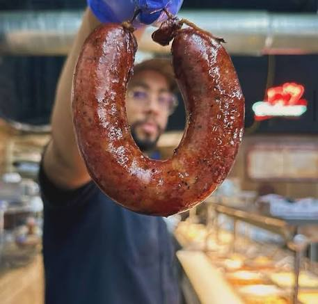

Classic “wait… what?” story energy. Two longtime friends discover through DNA or a family story that they are sisters. Phone topic: “What’s the wildest family secret that came out later in life?” Keep it light and local-feeling.
There is a competition for everything, and Texas high school mascots deliver. Rank the weirdest ones you’ve seen or go to school with. Instant caller phone topic with photos.
The eternal Texas debate just got specific. Who actually has the better brisket sandwich right now? Take sides, bring receipts, and let callers settle it.
“These are the last people I want moving my stuff.” Funny observation about a local mover staffed by artists. Cast confessions of the worst move ever + “would you hire the band?”
Pure cast bit. Rank the hosts/producers, then open it to listener votes. Visual, silly, and hard to mess up.
There is a guy who makes custom jingles for everything. “What would your personal entrance song / life jingle be?” Fast and funny.
Fall sports are ramping up. Don’t make it only about alcohol. Ask: “What behavior is completely normal at adult sports but inappropriate at a kid’s game?” Drinking, heckling, coaching from the stands, booing officials, dressing like it’s the Super Bowl, screaming at an 11-year-old. Callers will have stories.
Touched on a sensitive subject at the Whole Foods bar by chiming in when it turned out Pam was going to be 20 minutes late for work. Classic “I should have kept my mouth shut” energy. Cast confessions of the times you accidentally made it worse.
Oyster, octopus, blue cheese, catfish, frog, beef tongue, Spam, raw fish, tofu… Rank the list, confess what you’ve never tried, or invent the one food that should be on the “never again” list. Quick phone topic.
Personal / cast bit. What simple adult skill do you still fail at? Eye drops, parallel parking, folding fitted sheets, using a can opener the “right” way. Everyone has one.
August is barely over. “Is this too early or are you already in full spooky mode?” Perfect Friday observation + caller poll.
300,000 sq ft sporting-goods palace with a 65-ft indoor Ferris wheel, 16,000-gallon aquarium, candy store and café. Grand opening starts 7 a.m. with giveaways and skydivers. “Are we going for the gear or just to ride the Ferris wheel inside a store?”
Season is almost here. “What’s the one Longhorn take you will die on?” Perfect for Friday energy and callers who think they know more than the coaches.
Austin EV owners will have stories. “Have you ever babysat the range or pushed it on purpose?” Pair with the parking-ticket hack.
Local hero energy just down I-35. “What’s the most Austin/Central Texas way to celebrate a hometown champion?”
Someone has the number for the people who adopted Clyde’s brother. Should we organize a reunion? Soft, feel-good phone / cast bit.
Classic: Aggies after a loss, anyone whose plans fell apart, the “I already need a nap” crowd. Friday setup for Monday pain.
Shot put, hibachi, soccer scoring, talent in a beauty pageant. “What else is still exactly the same as when you were a kid?”
Cool local look at an Austin landmark. Date-night / local-pride recommendation that isn’t another bar tip.
Pure visual bit. “What’s the most Austin version of neighborhood watch?”
You want to know how much people have changed? Bad News Bears came out 50 years ago. Nostalgia + “what kids’ movie still holds up?”
There is a competition for everything. Speed puzzling is a real thing. “What obscure competition would you secretly dominate?”
Cast bit / recurring idea — logging the small daily letdowns for comedy.
Recurring bit. Tricia catching up mid-conversation. Keep the running joke alive.
Music / country note that fits the show’s energy.
Local film/TV interest. Light industry/cool-job angle.
Harrison Ford and Cookie Monster cooking and “num numing” the Raiders of the Lost Ark theme. Pure visual drop gold.
Instagram reels of a band performing on Lake Austin. Local vibe + “what’s the most Austin place you’ve seen live music?” Audio already in Edited Audio.
Limited-time or local buzz food item. “Is this a yes or a hard pass?”
A physical video store is opening near the airport. Nostalgia + “when did you last rent a movie?”
Local growth story. “Would you still move to Georgetown now, or is the secret out?”
ParkScore rankings. Austin climbed. Soft local pride + “which park is actually your go-to?”
Instagram reel gold. “Is this peak Austin summer or just enabling day-drinking?”
Statesman data piece. Everyone has a candidate. Take calls, then reveal the actual #1.
Athlete / coach / restaurateur / homeless / TV weather person / killer / musician / naked cyclist. Rank them or add categories.
MySanAntonio explainer. Perfect for “what do you actually do at red lights?” confessions.
Instagram gold. Cast examples first, then phones. Keep it light and office-safe.
Host shares, then “what song still lives rent-free from when you were 10?”
Short bit / observation — girls and keychains.
Local Austin food landmark news. Phone topic: “What’s the most Austin place that has taken a beating lately?”
Rail service suspended while crews work on the new North Burnet/Uptown Station.
About 9,000 more than last year. Caller: “Was getting into UT harder when you applied… or does it just feel that way now?”
Bit idea — guess the Facebook Marketplace asking price, Price Is Right style.
Local visual / story note.
Local mystery + band connection. Still floating as a soft local story.
Cast / industry phone topic that still has legs.
Local sushi food truck Little Nishi expanding on Southern Oaks Drive. Softshell tempura, hand rolls, sashimi coming.
Driver figured out a way to have the car move every two hours so it wouldn’t get a ticket. Austin EV owners will have opinions.
Cast / relationship bit. Keep it playful.
Perspective bit on the size of the local factories.
Standing bit format — rank anything.
Cast quality-of-life update. “What was the upgrade that changed your daily life the most?”
Local impact note for boaters and lake people.
Curious “where does it go?” phone topic.
Running cast tease / character bit.
Saw a guy with perfectly white sneakers and wanted to stomp them dirty. Middle school / high school rule: new shoes get stomped; fresh haircut gets a slap on the neck. Caller topic gold.
Cast bit / visual — Tricia going full kid-mode on a swing.
Short reaction / drop note.
Use the JB & Sandy Audio Extractor on your computer (Windows or Mac).
↓ Download Audio Extractor (Mac & Windows)
Platform reliability:
✅ YouTube – works best
⚠️ Instagram & Facebook – hit or miss (they block a lot)
✅ TikTok & X – usually good
You can also paste links here in the Grok chat and say “extract audio” if you need help.
Tap a week to open questions on this page. Use Download if you need the Word file. Weeks move to Archive the day after their Friday.
Past weeks appear here after their Friday ends. Nothing archived yet.
Picked for the show: local Austin/Central Texas, birthdays, light entertainment. Refreshed Aug 29 morning. No politics. More here → opens the full story.
Lea Michele (40), Elliott Gould (88), Rebecca De Mornay, Carla Gugino, Nicole Byer, Temple Grandin, Chris Hadfield, Kyle Cook (Matchbox Twenty). Easy drops + “which one would you want as a surprise guest?”
Grand opening Saturday. 300k+ sq ft, 65-ft indoor Ferris wheel, giant aquarium, candy shop, café. Parking-lot party started 7 a.m. with giveaways and skydivers. Pure “only in Texas” weekend tip.
SURFILMUSIC Tour stop at Germania Insurance Amphitheater. Perfect late-summer outdoor show energy. “Who’s actually going… and who’s just claiming they might?”
Weekend comedy gold. If you need a laugh after the heat, this is the move.
Local events and moments continue after the recent wave of tributes. Soft, feel-good local note that lands with the audience.
KXAN dug into the history. Perfect “we survived another August” conversation starter after the recent rain break.
Weird local visual. “What’s the most Austin way for something to go wrong on Rainey?” Keep it light observation, not heavy news.
Preservation Austin lineup is out. Local pride + “which Austin business should never leave?” phone topic.
Monday = Joe Show Tampa only. Wednesday = Mojo Detroit only. Thursday = Hey Morton San Diego only. Any day = Smiley (Indy), Daly Migs (Seattle), Valentine (LA), On Air with Ryan Seacrest (LA), similar friend-cast / iHeart mornings. NEVER Bobby Bones, Jubal, Beat Migs/Beat JB, or Battle of the Burbs. Do not copy scripts. Friday afternoon set — 10 fresh cards.
Recommend: none — pure talk / phones bit.
Recommend: none — pure talk / phones bit.
Recommend: none — pure talk / phones bit.
Recommend: none — pure talk / phones bit.
Recommend: none — pure talk / phones bit.
Recommend: none — pure talk / phones bit.
Recommend: none — pure talk / phones bit.
Recommend: none — pure talk / phones bit.
Recommend: none — pure talk / phones bit.
Audio ready in Edited Audio.
Current working clips. Dolly tribute package lives in Audio Archive.
Parked on purpose — not deleted. Dolly tribute week plus related notes. Still playable and downloadable here.
Dolly Parton on Johnny Carson → Instagram Reel
Ideas: Could listeners leave Dolly messages? Play the best/emotional ones into Dolly songs or funny clips for the next few days. Listeners post pictures and Dolly tributes to socials.
Audio drops mentioned: Islands In The Stream (Kenny & Dolly), Dolly on Carson “bossomy,” Here You Come Again, Coat of Many Colors (live Ireland pub), Jennifer Aniston threesome bit, People Magazine worst dressed reaction, “wear your rubbers.”
Comedy drops. Files live in Dropbox (and on the H: drive). The site does not store the 616 MB. Open the folder, then grab the file that matches the name.
File on H: / Dropbox: Final Last Laugh Sid Davis Old Rock and Rollers.wav
File on H: / Dropbox: Final Last Laugh Steven Wright Breakfast Anytime.wav
File on H: / Dropbox: Final last laugh Wife is a Morning Person.wav
File on H: / Dropbox: Final Last Laugh Foxworthy Flip Flops.wav
File on H: / Dropbox: Final Last Laugh Derrick Stroup 90s Cowboys.wav
File on H: / Dropbox: Final Last Laugh Kathleen Madigan Airport Drinking.wav
File on H: / Dropbox: Final Last Laugh Wetting The Bed.wav
File on H: / Dropbox: Final Last Laugh Lachland Patterson-Women is so smart.wav
File on H: / Dropbox: Final last Laugh Brent Moran.wav
File on H: / Dropbox: Final Last Laugh Teachers-Jail.wav
File on H: / Dropbox: Final Last Laugh Jim Gaffigan Indoor Pools.wav
File on H: / Dropbox: Final Last Laugh Dusty Slay No Better Shirts.wav
File on H: / Dropbox: Final last Laugh Bill Mahr UFOs.wav
File on H: / Dropbox: Final Last Laugh Nate Bergatze Fight an orangatang.wav
File on H: / Dropbox: Final Last Laugh Karen Morgan Dorm Shopping.wav
File on H: / Dropbox: FInal Last Laugh Zoltan Kaszas Back To School.wav
File on H: / Dropbox: Final last laugh Jason McKinney No AC.wav
File on H: / Dropbox: Final Last Laugh Jeff Allan Sunscreen.wav
File on H: / Dropbox: Final Last Laugh Gaffigan Sunburn.wav
File on H: / Dropbox: Final Last Laugh Shane Gillis Al Quida.wav
File on H: / Dropbox: Final Last Laugh Joy Koy Street Names in Hawaii.wav
File on H: / Dropbox: Final Last Laugh Louie Anderson Ceasar Salad.wav
File on H: / Dropbox: Final last laugh Erica Rhodes Avacado.wav
File on H: / Dropbox: Final Last Laugh Wave Williamson Flight Concerns.wav
File on H: / Dropbox: Final Last Laugh Ron White Hurrican Evacuations.wav
File on H: / Dropbox: Final last laugh Jim Gaffigan Big Families.wav
File on H: / Dropbox: Final Last Laugh Sharks.aac
File on H: / Dropbox: Final Last Laugh College Wrestling.wav
File on H: / Dropbox: Final Last Laugh Xplosive D.wav
File on H: / Dropbox: Final Last Laugh Dusty Slay Rain.wav
File on H: / Dropbox: Final Last Laugh Seinfeld Kids Say Wait Up.wav
File on H: / Dropbox: Final Last Laugh Larry Cable Guy July 10 2026.wav
File on H: / Dropbox: Final Last Laugh Nate B Boating.wav